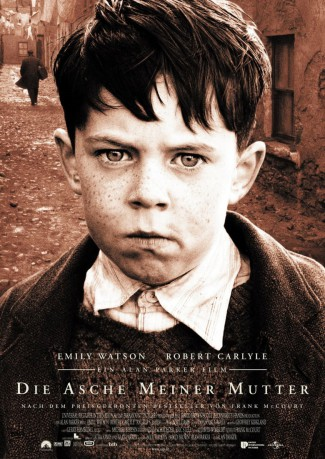

#8406 Die Asche meiner Mutter
Alternativ: Angela's Ashes
 
 IMDB-Wertung: 7.3 / 10
IMDB-Wertung: 7.3 / 10  Metascore: 0
Metascore: 0 
Brooklyn, im Jahre 1934: Da das Familienglück der McCords in Amerika ausbleibt, verschlägt es sie zurück in ihre irische Heimat nach Limerick. Doch dort angekommen erwartet sie nur bittere Armut und Trostlosigkeit. So gibt auch der Arbeitsmarkt keine Stelle für den jungen Familienvater Malachy her, was ihn und seine Familie allmählich in die Verzweiflung treibt. Seinen Frust ertränkt er schließlich im Alkohol, während seine Kinder kaum etwas zu essen haben und mit lumpigen Kleidern zur Schule gehen müssen. Auch der kleine Franky leidet zunehmend unter den streng katholischen Sitten des Landes und der Alkoholsucht seines Vaters. Zusammen mit seinen Schulfreunden versucht er dennoch das Beste aus seinem Leben zu machen, vergnügt sich im städtischen Kino und lernt seine erste Liebe kennen. Doch für Frank steht fest, dass er eines Tages alles hinter sich lassen möchte um irgendwann nach Amerika zurückkehren.
Jahr: 1999
Dauer: 145 Minuten
FSK: 12
Land: USA Studio: Paramount PicturesTonspuren: DTS - ,
Untertitel: Deutsch,
Auflösung: 1080p (1920x1040) Größe: 11161 MB
Genre: Drama
Regisseur:  Alan Parker
Alan Parker
Drehbuch: Frank McCourt
Soundtrack: John Williams
Darsteller:
 Emily Watson als Angela McCourt
Emily Watson als Angela McCourt Robert Carlyle als Malachy (Dad)
Robert Carlyle als Malachy (Dad)- Ciaran Owens als Middle Frank
- Michael Legge als Older Frank
 Pauline McLynn als Aunt Aggie
Pauline McLynn als Aunt Aggie Devon Murray als Middle Malachy
Devon Murray als Middle Malachy- Peter Halpin als Older Malachy
- Frank Laverty als Young Paddy Clohessy
 Laurence Kinlan als Older Paddy Clohessy
Laurence Kinlan als Older Paddy Clohessy- Johnny Murphy als Seamus
- Brendan McNamara als Toby Mackey
 Kerry Condon als Theresa
Kerry Condon als Theresa Gerard McSorley als Father Gregory
Gerard McSorley als Father Gregory- Eamonn Owens als Quasimodo
- Brendan O'Carroll als Funeral Carriage Driver
- Nuala Kelly als Dance Teacher
- Danny O'Carroll als Clarke
 Marcia DeBonis als Mrs. Leibowitz
Marcia DeBonis als Mrs. Leibowitz- Alan Parker als Dr. Campbell
 Stephen Marcus als English Agent
Stephen Marcus als English Agent- J.J. Murphy als St. Vincent Man #2
 Frankie McCafferty als St. Vincent Man #3
Frankie McCafferty als St. Vincent Man #3 Martin Benson als Christian Brother
Martin Benson als Christian Brother Jer O'Leary als Parent #3
Jer O'Leary als Parent #3- Karl Dawson als Boy (uncredited)
- Dennis Milholland als Man in the Pub (uncredited)
- Nathan Slattery als Bus Passenger (uncredited)
- Viviana Verveen als Girl (uncredited)
- Joe Breen als Young Frank
- Ronnie Masterson als Grandma Sheehan
 Liam Carney als Uncle Pa Keating
Liam Carney als Uncle Pa Keating- Eanna MacLiam als Uncle Pat
- Andrew Bennett als Narrator
- Shane Murray-Corcoran als Young Malachy
- Aaron Geraghty als New Born Michael
- Sean Carney Daly als Baby Michael
- Oisin Carney Daly als Baby Michael
- Shane Smith als Middle Michael
- Tim O'Brien als Older Michael
- Blaithnaid Howe als Newborn Alphie
- Klara O'Leary als Baby Alphie
- Caroline O'Sullivan als Baby Alphie
- Ryan Fielding als Older Alphie
- Daire Lynam als Margaret Mary
- Ben O'Gorman als Eugene
- Sam O'Gorman als Oliver
- James Mahon als Middle Paddy Clohessy
- Lucas Neville als Willie Harold
- Walter Mansfield als Fintan Slattery
- Des McAleer als Mr. Benson
Datei: X:\1999\Asche meiner Mutter, Die (1999, FSK12, 1920x1040).mkv seit 01.03.2018
Festplatte: HD 1996-2002
 Es gibt insgesamt 81 Filme in der Gruppe '1999'
Es gibt insgesamt 81 Filme in der Gruppe '1999'